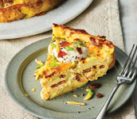

Scandanavian Pepper Quiche


by Dr. Hanz Maniacal

A family home-style quiche for any pie fan. Includes Halapenos, Habeneros, Ghost Peppers, Carolina Reapers, material used in pepper spray, and other mild peppers such as Bell. This pie is fun for the whole family and an epic sure-surprise for all taste buds!